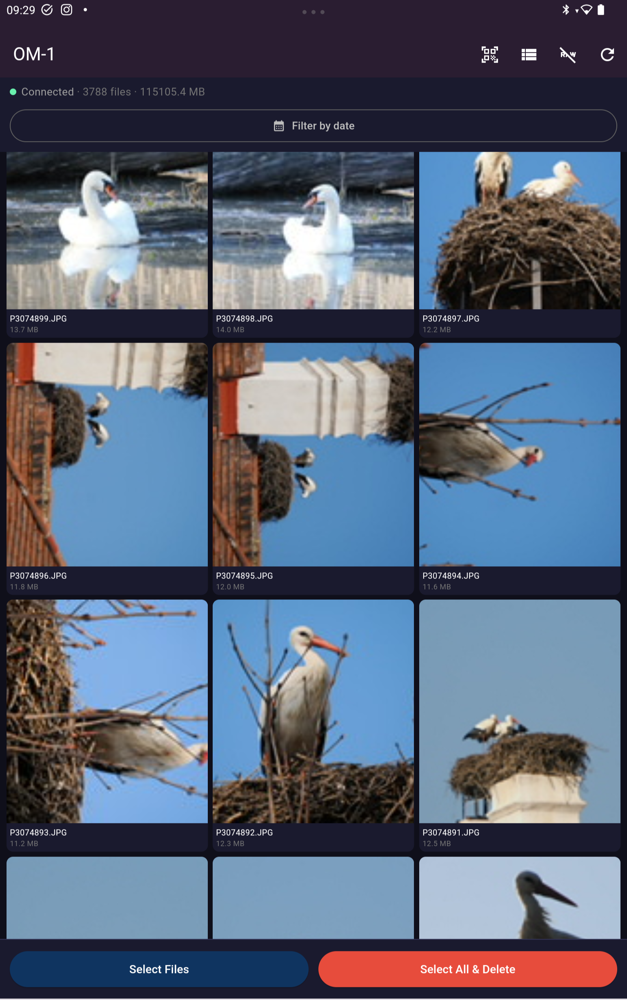
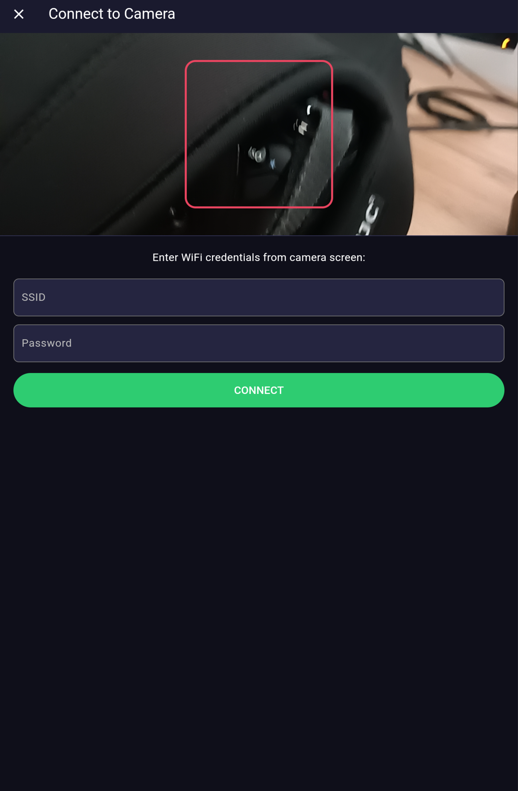

Manage photos on Olympus and OM System cameras via WiFi. Download, delete and browse files — from your phone or computer.
The official Olympus OI.Share app has serious limitations. Olympus View solves them:
Scan the QR code from the camera screen — the app connects to WiFi automatically. Supports OIS1 and OIS3 formats.
Select unwanted files and delete them directly from the camera. Free up memory card space without a computer.
Select one file and press the button — all files from the same date are selected automatically.
Hide ORF/RAW files with one button to remove duplicates when shooting RAW+JPG.
Download groups of files with progress. On Android photos appear in gallery immediately.
Works on Android, Windows and in any browser. Unified interface across all platforms.


APK file
Manual install
Portable EXE
No installation needed
Open in browser
No installation
Olympus View is built with Flutter/Dart. The source code is fully open — you can study, modify and build it yourself.
Flutter 3 / Dart — Material 3 — OPC Communication Protocol
The app communicates with the camera via HTTP over WiFi (IP: 192.168.0.10). Uses the OPC (Olympus OPC Communication Protocol).
Olympus and OM System cameras use a proprietary QR code format (OIS1, OIS3) with a substitution cipher. The app decodes them automatically and extracts WiFi SSID, password and Bluetooth info.
Керуйте фотографіями на камерах Olympus та OM System через WiFi. Завантажуйте, видаляйте та переглядайте файли — з телефону або комп'ютера.
Офіційний додаток Olympus OI.Share має серйозні обмеження. Olympus View вирішує їх:
Відскануйте QR-код з екрану камери — додаток автоматично підключиться до WiFi. Підтримка форматів OIS1 та OIS3.
Виберіть непотрібні файли та видаліть їх прямо з камери. Звільняйте карту пам'яті без комп'ютера.
Виділіть один файл і натисніть кнопку — усі файли за ту саму дату будуть вибрані автоматично.
Приховуйте ORF/RAW файли однією кнопкою, щоб прибрати дублі при зйомці в RAW+JPG.
Завантажуйте групи файлів з прогресом. На Android фото одразу з'являються у галереї.
Працює на Android, Windows та у будь-якому браузері. Єдиний інтерфейс на всіх платформах.
APK файл
Встановити вручну
Portable EXE
Не потребує встановлення
Відкрити у браузері
Без встановлення
Olympus View написаний на Flutter/Dart. Вихідний код повністю відкритий — ви можете вивчити його, модифікувати та зібрати самостійно.
Flutter 3 / Dart — Material 3 — OPC Communication Protocol
Додаток спілкується з камерою через HTTP по WiFi (IP: 192.168.0.10). Використовується протокол OPC (Olympus OPC Communication Protocol).
Камери Olympus та OM System використовують пропрієтарний формат QR-кодів (OIS1, OIS3) з підстановочним шифром. Додаток декодує їх автоматично та витягує SSID, пароль WiFi та інформацію про Bluetooth.
Управляйте фотографиями на камерах Olympus и OM System через WiFi. Скачивайте, удаляйте и просматривайте файлы — прямо с телефона или компьютера.
Официальное приложение Olympus OI.Share имеет серьёзные ограничения. Olympus View решает их:
Отсканируйте QR-код с экрана камеры — приложение автоматически подключится к WiFi. Поддержка форматов OIS1 и OIS3.
Выберите ненужные файлы и удалите их прямо с камеры. Освобождайте карту памяти без компьютера.
Выделите один файл и нажмите кнопку — все файлы за ту же дату будут выбраны автоматически.
Скрывайте ORF/RAW файлы одной кнопкой, чтобы убрать дубли при съёмке в RAW+JPG.
Скачивайте группы файлов с прогрессом. На Android фото сразу появляются в галерее.
Работает на Android, Windows и в любом браузере. Единый интерфейс на всех платформах.
APK файл
Установить вручную
Portable EXE
Не требует установки
Открыть в браузере
Без установки
Olympus View написан на Flutter/Dart. Исходный код полностью открыт — вы можете изучить его, модифицировать и собрать самостоятельно.
Flutter 3 / Dart — Material 3 — OPC Communication Protocol
Приложение общается с камерой по HTTP через WiFi (IP: 192.168.0.10). Используется протокол OPC (Olympus OPC Communication Protocol).
Камеры Olympus и OM System используют проприетарный формат QR-кодов (OIS1, OIS3) с подстановочным шифром. Приложение декодирует их автоматически и извлекает SSID, пароль WiFi и информацию о Bluetooth.